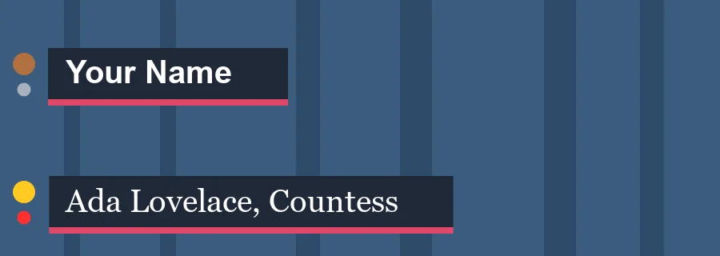

Tutorials
A template that fits
Pin a lower third's plate to its name so it stretches to fit, fill in a font, a checkbox and a list, and keep its timing on a longer span.
This page is also a lesson inside Phoenix: choose and start A template that fits, and Phoenix points at each control as you go. It takes about 9 minutes.
To follow along here instead, download the starting document, template-fit.fla, and open it with .

Lower Third is a template, a symbol whose named parts each instance can fill in. Its fields are the dynamic text name, the movie clip live, a light with two frames (off and on), and the movie clip medal, whose frames are labeled Bronze, Silver and Gold.
Behind the name is a dark plate. In this lesson you will make the plate fit any name, and keep the lower third's wipe on and wipe off at their own speed however long it stays up.
1. Go to frame 24
The lower third wipes on over its first half second, so on frame 1 there is nothing to see yet. Click frame 24 of the Lower Third layer.
2. Edit the symbol
Press V for the Selection tool and double-click the lower third. You are now inside the symbol, and the edit bar above the stage reads Scene 1 › Lower Third.
3. Pin the plate to the name
Right-click the dark plate behind the name and choose Pin to Text.... Set Text field to name and This instance to Stretch to its width, and click OK.
Nothing changes yet: the name is as drawn. When an instance gives it longer or shorter words, the plate keeps the same room around them.
4. Back to the scene
Double-click an empty part of the stage. You can also click Scene 1 at the left of the edit bar, or press Ctrl+E.
5. Select the lower third
Click the lower third. The Properties panel's Template section lists its fields.
6. A longer name
In the name box, type Ada Lovelace, Countess and press Enter. The plate stretches to fit the longer name.
7. Pick a font
Under it, in name font, type or choose Georgia. The name is drawn in that font for this instance only, and the plate fits it again.
8. Go live
live has two frames, so it shows as a checkbox. Tick On: the light turns red.
9. Give a medal
medal has labeled frames, so it shows as a list of the labels. Choose Gold.
10. Play it
Press Enter, or click the play button in the timeline header. The lower third wipes on, holds, and wipes off, all in two seconds. Press Enter again to stop.
11. Keep it up longer
Click frame 120 of the Lower Third layer and press F5, or choose Insert > Timeline > Frame. The span now runs five seconds.
12. Responsive time
Press Enter to play it again. The wipe on and the wipe off keep their speed, and only the hold in the middle is longer.
That is because the symbol's Labels layer marks the frame where the middle starts stretch and the frame where the ending starts outro. On a longer or shorter span, the middle stretches or squeezes to fit.
What you did
You pinned a plate to a text field so it fits any name, filled in a font, a checkbox and a list, and saw the lower third keep its timing on a longer span.
Pinned parts can also move with an edge of the text instead: a light that sits just after the name, however long it is. File > Export > Render from Data... renders one version for each row of a spreadsheet.
For everything this tutorial touches on, see Fit what it is given.